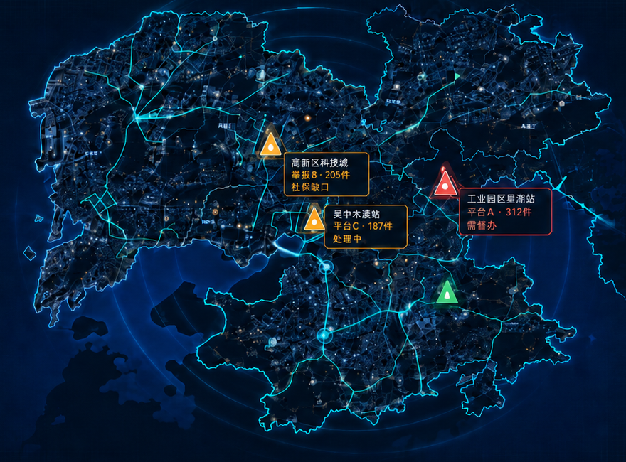

工业园区星湖站
平台A · 312件
需督办
高新区科技城
举报8 · 205件
社保缺口
吴中木渎站
平台C · 187件
处理中
红色督办中心
平台A星湖站：7日内5起配送事故报备。AI关联免责条款、夜间高峰派单与事故报备缺失，建议工会/人社/仲裁联动核查。
真实地图底座 · 数字孪生风险图层
实时处置流：
15:42 工会已介入工业园区星湖站
15:48 仲裁材料补正完成
15:56 平台B提交社保窗口清单